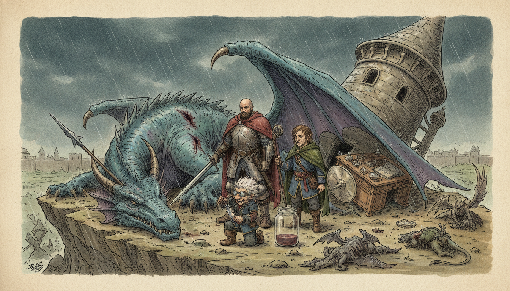
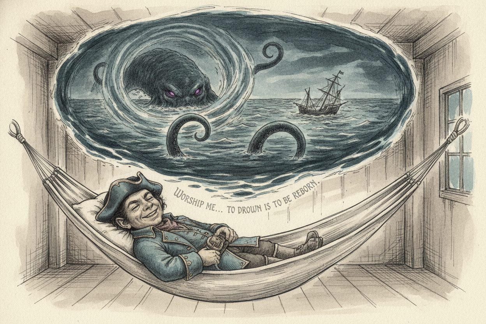
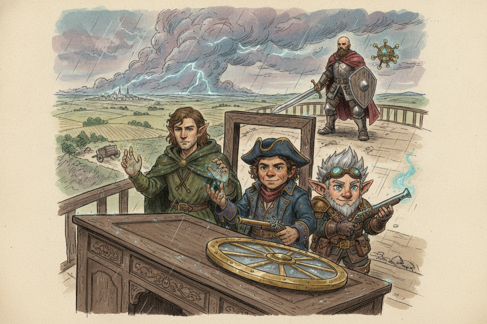
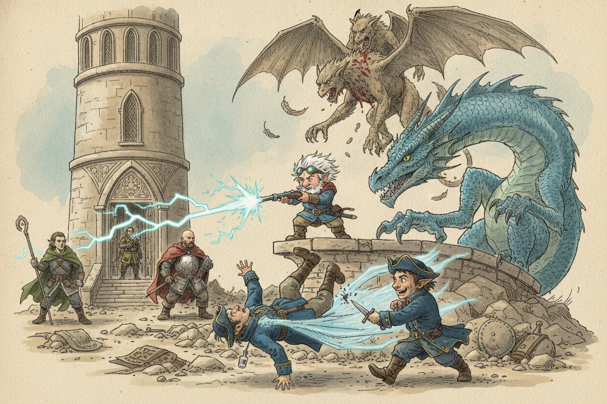
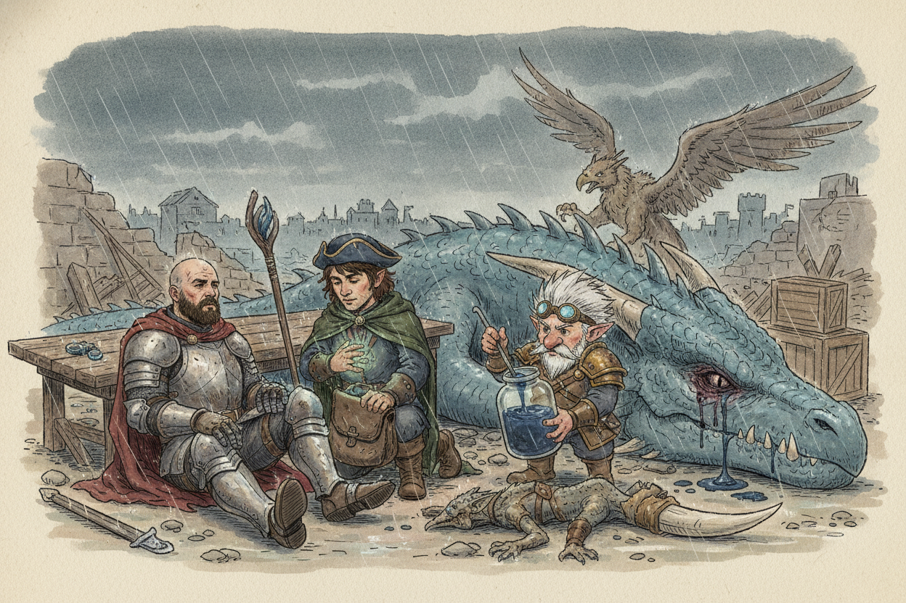
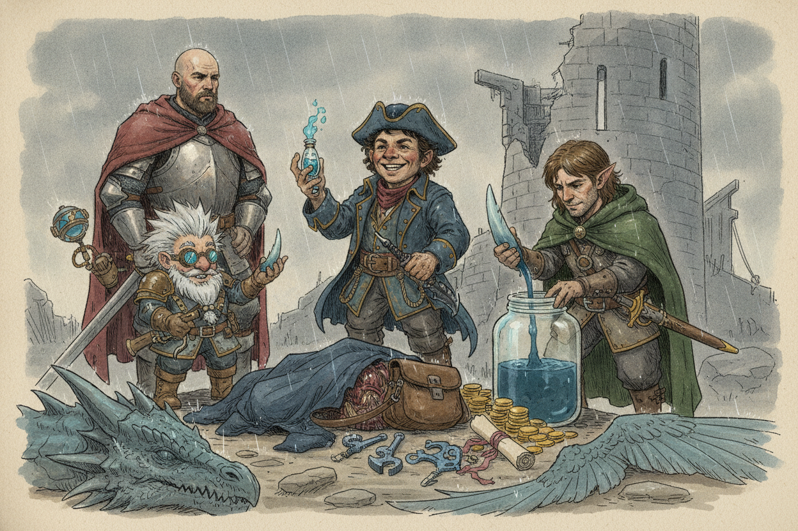

Session 2026-02-10

In brief: Roused by Zephyros's dire warning of giant gods and an imminent assault, the crew set the wizard's tower down outside Goldenfields and weathered a brutal battle against a young blue dragon, a half-dragon rider, a kobold lackey, and three gargoyles — emerging bloodied but with a quest to the Eye of Annam and a haul of strange loot.
A Warning on the Wind

After a long rest piloted through favorable winds, Toz dreamed again of the glassy ocean — but this time an enormous, malevolent shape stirred beneath the surface and told him his god of the sea no longer watched over him. "Worship me, and my power will be yours," it rumbled. "To drown is to be reborn." Toz woke to find Zephyros frantically rousing the crew. The cloud giant had cast Contact Other Plane and been warned of great peril bearing down on the tower — and of something more. The giant gods themselves wished to aid the crew, but only if they first proved themselves at the Eye of the All-Father, also called the Eye of Annam, where an oracle could answer any question. They were urged to seek it out before confronting any of the giant lords; to do otherwise would court disaster.
Down to the Ground at Goldenfields

A magical storm boiled on the horizon — bluish-mauve, lightning-laced, perhaps an hour and a half out. Below stretched the rolling farmland of Goldenfields, the walled town visible in the distance. Reasoning that a thousand-foot drop made the tower a murder box, the crew had Zephyros sink the spire down to a rocky outcropping near a small wooded grove. A wagon on the road wheeled around and fled at the sight of them. Fiz sent a charmed griffin ahead on reconnaissance; it returned reporting three stone-winged gargoyles, a small flying lizard, and a great blue dragon ridden by a "dragon man." The crew dug in behind Zephyros's overturned desk and his levitating disc, Hal taking the upper floor and the others holding the doorway with Woz's Bless and Barkskin layered over everyone.
The Blue Dragon and His Rider

The dragon landed with a thud and demanded the giant's blood. Fiz tried to parley, but the beast had no interest — Zephyros, grim and untested, drew his staff for what he admitted was his first true dragon-fight. The rider, a half-dragon in a deep blue cloak, summoned ethereal wings and tried to break off toward the tower's upper floors with "his own aims." Fiz blasted him with Firebolt; the half-dragon's concentration broke and he plummeted sixty feet to the ground. Toz finished him with a stab to the heart, and a glass vial of blue liquid at his throat instantly turned to ash as he died. Meanwhile the dragon vented a line of lightning at Zephyros, who shrugged it off, and the gargoyles tore one of the griffins to bloody pieces.
A Bloody Trade in the Rain

The fight ground on through Zephyros's air elemental whirlwind, repeated Guiding Bolts from Woz, Toz's Ray of Frost on the kobold, and a leaping sword-strike from Hal — who jumped nine feet to plunge his blade into the dragon's eye. The dragon's recharged breath weapon dropped Hal unconscious and killed a griffin, and Hal began rolling death saves while gargoyles raked at Fiz. Hal's javelin of opportunity, a flurry of Zephyros's magic missiles, and a final ranged blow brought the dragon crashing down, dead. Zephyros's Mass Suggestion politely shooed the last gargoyle out of his tower. Woz roused Hal with healing word, and the crew picked through the corpses in the rain.
The Spoils

From the half-dragon's body Toz claimed a Bloodwell Vial (a sorcerer's focus that grants +1 to spell attacks and restores sorcery points on a short rest) and a Dagger of Venom. The kobold's immaculate leather satchel proved a Bag of Holding containing 80 gold, a Potion of Lightning Resistance, two Scrolls of Tongues, a set of blue-steel thieves' tools etched with Draconic numerals, a silk pouch of powdered sapphire worth 150 gp, a non-magical ring bearing a blue dragon sigil, and a sheaf of notes in Draconic that no one could yet read. The crew drained two liters of the dragon's blood into a giant-sized jar — Zephyros warned it was a potent and highly addictive stimulant, but a fine thing to sell. Fiz pocketed a single intact dragon's tooth. The party leveled up.
What's Next
- The Eye of Annam. Zephyros's vision points the crew here before they face any giant lord. Location unknown; the oracle there can answer any question they bring.
- The half-dragon's purpose. He was not the dragon's pawn — he had his own aims, possibly involving the tower itself. His vial of ash, his Draconic notes, and the blue dragon sigil ring are all unread clues.
- Toz's drowning god. The malevolent presence in his dreams claims his sea-god has abandoned him and is courting his worship. The connection to his lost ship, the True Hand, remains unspoken.
- Goldenfields ahead. The walled farming town lies within sight; the crew has not yet entered it.
Original session notes (Fiz's POV)
Giant gods want to help, must visit Eye of Annam
Raw transcript (458 chunks of auto-transcribed audio)
Lightly chunked. Expect overlap with table chatter.
Nice. Start. Okay, I'm recording. Recording now. My new wallet. Recording now.
Nice. Okay, so... After the last battle, using... Using Taz's navigation skills, you guys were able to pilot the tower in a way that utilized the wind most optimally and gave yourselves about nine hours in which you were able to take a long rest. I'm going to sit on this chair. You want your chair?
Mm-hmm. Let me push that over. During that time, Taz has another dream. You're standing on a piece of driftwood that appears to be part of your broken ship. And again, you can see the smooth glass-like ocean spreading out from you in all directions. This time you see an amorphous, gigantic shape beneath the surface of the water, and it speaks to you in an unearthly, incredibly deep and malevolent voice.
Your god no longer watches over you. I can sense his absence. tells me I have no god who's your god what does he do I have to remember which one it was the god of the sea oh sweet I just want to teach you it was on here I'm so happy. Yay! Worship me, and my power will be yours. deep rumbling comes from beneath the sea, and you feel the shock of cold water hit your feet as the piece of wood you're standing on begins to sink.
And then you hear the words, To drown is to be reborn. Is this an ironborn thing? Huh? Is this an ironborn thing? The drowned ones. They stole it from us, man.
And you all wake up to Zephyrus coming around. Wake up! We must prepare! For what? For whatever is coming! Oh, what's coming?
We do not know! How do you know it's coming? The gargoyles were a portent of doom? Yes, because I spoke. When I cast the spell Contact on a Plane, I was warned of some great danger that is coming this way. I was also told something important you must know.
The giant gods, they wish to help you. But you must visit the eye of the All-Father. You must prove yourself worthy. Where is this eye? I do not know. Also known as the Eye of Anam.
Anam is the god of giants. The god of giant gods. There is an oracle there that can answer any question you ask. Anam? Anam. A-N-A-M?
A-N-A-N-A-M. Oh, double N's. You are urged to do this before you face any of the giant lords. It is up to you. But they warned of great peril should you face the giant lords first. Now let's get ready.
For whatever is coming. Here will be Zephyrus. Oh boy. He's big. so does he join our party yeah so um did he just come in he came in this door or the stairs he lives here that's Zephyrus oh that's Zephyrus okay it looks a little bit different than this bill boy here Oh, no. He also forms some sort of sentinel out of clouds that is just completely stationary and lifeless, but it's like a cloud snowman.
Cool. How should we prepare? What does that thing do? Should we fortify this castle? What can we do? I am not a tactician.
I am the arcane researcher. - Can you fight? - I was taught combat from an early age, yes. - Are you gonna fight with us? - I will defend my tower. - Okay, okay.
- We use this chair somehow. - Where's Giyashon? Are you, is that your character? Oh, yeah, actually, no, no. We're still flying up in the air, right? I'm going here.
Yeah. Do you have anything here that would help us? I have my staff. I have my spell book. So there's some evil that's coming to us right now? Yes.
Okay. Do you know how many? I do not know what comes. I don't know. Perhaps we shall keep out a vigilant eye. Look out.
Are you still charmed? I guess you're not charming that. You can see the edge of this massive storm cloud coming. You can see lightning striking in the storm cloud. It's got like a bluish mauve hue that is apparently some sort of magical storm that is coming your way bearing down on this Do those colors mean anything to you? That just looks cool Yeah, I agree I guess we can go ahead and let's Those are our two griffin friends Yay And then I have a new griffin friend, right?
The figurine of Wunder's power. If you use it, how long does it last? Six hours. This means flying. Here's yours. Sweet.
How soon do we think it'll be here? What does it look like? Imminent? 30 seconds? Make a... nature check.
You can do this as a group if you all want to participate or whoever's got the best nature. Got shit nature. Seven. Seven. Twelve. Nice one.
Eleven. Four. Eleven. Fifteen. Hey. Oh, nope, sorry.
Seventeen. You just roll straight checks, right? You don't add anything. Add your nature. Right. So subtract my nature.
You have negative nature? Yeah. Does everyone have negative nature? I rolled an 18. I got positive 0. He's got minus 1 intelligence here.
What a nature domain. I feel like you should be role-playing that negative intelligence a little more. Your nature domain. I thought he was. He was doing well. Spot on.
I already got a 17. 17. Okay. Got like an hour and a half until it gets here. Are we on the ground? No, you're a thousand feet up.
Okay. If we look down. You can move the tower if you want. Can we see the ground? Can we send a... I guess what you're seeing, we can send a griffin over to kind of scout what the griffin can see.
Good. A little recon. How far out can the griffins go before they... How long does your buddy last? Six hours. It's a griffin.
It can fly. The charmed ones, I don't think, last. You just have to convince it to do that and somehow relay the information back and forth. Yeah, they're not very intelligent, if I remember correctly. So, yeah, I mean... Zephyros, if we sent one of your griffins out ahead, would they be able to communicate to us what they see?
I am not able to communicate with them. If you have a way, you can. I thought one of you was talking to them. I can do that. They are somewhat stubborn. They would need some convincing.
And that one, that's why I said check. What'd you say? Isn't your buddy likely to help you? or no. Yeah, man, this guy. Oh, so you're going to set him?
Does it have a particular range or anything? I didn't see anything that said that. It was just he's a good friend for six hours? Yeah. You have like some kind of telepathic connection, don't you? Or just it obeys your orders?
It says, creature is friendly to you and your companions. It understands your languages and obeys your spoken commands. If you issue no command, the creature will defend itself but take no other actions. The creature exists. Yeah. Does it say anything about its type not being a beast?
I don't see anything here. It says a statuette of a beast small enough. Creature exists. Otherwise it's a spell slot so I don't speak with animals. If that's what we really want to do, we can do that. Here comes a living creature.
Space, living creature. I'm just trying to understand if speak with animals would work with it. I imagine it would, unless it says it's like fae or something. Well, I mean, it says it understands your languages. Yeah. But it doesn't give it the ability to speak.
Gotcha. But speak with animals, I think, would still apply. I still, yeah. Either way, we would just send one of the other ones. Let's see. Okay, so, uh, what are you doing?
What are you guys doing? Yeah, I guess I'll cast Speak With Animals on my guy. I think you just cast it, and then you have the ability to speak with animals. Oh, it's not like a specific one? Yeah. Yeah.
Okay, let's do that. Oh, you can talk to all of them. Sweet. Yeah. uh and you said so you you said it would be a persuasion check to send them out there yeah so uh so i guess what there's a storm i'm not fucking going out there but this guy will listen right he'll do whatever you say yeah so we can send him out yes master i'll do as you say there you go I just wish to be worthy of your praise. Super duper.
That's cool. What specifically would you like me to do, Matt? So I think it was along the lines of we were saying reconnaissance, like just go and let us know what's coming, right? I want me to see if there's something out there. Indeed. The griffin's flying.
Just an idea of what's coming. Do you just want to talk about a strategy, a defense strategy, a attack strategy? He bolts off towards the, into the distance, and disappears into the distance. So the griffin can travel 80 feet. Yeah. Fast dude.
doing anything while we wait for super fast griffin come back how maneuverable is this castle you can take a base of maneuvers slow but slow it gets around If you wish to land, we may have just enough time, according to your hour and a half. What do we see below us? It's like a grassland terrain. You guys are headed towards golden fields, so this area is just like slow rolling hills and grassland. No trees or anything? Nothing we could take cover?
trees and stuff. Okay. You know, kind of whatever you want it to be. What do you guys say we bring this down to the ground? You see like a little rocky outcropping with like a little wooded grove near it. That looks like it might be a...
So I think, I say we bring this down to the ground because right now we're basically in a murder box. If something comes in here that's super powerful and we are basically stuck inside this room with them. We're the only thing we can't find. of the room though. You can say in. You can say in.
Yeah, yeah. But it would be nice to have the option, I think, to bail. Yeah. But so bringing it down would just add that option. Always jump. And you don't risk falling to your deaths.
Yeah. Right. So surely if something were to come here, it must possess the ability to fly. Right. If you do not. So should we turn out all the lights?
Outside the tower? You know, I tend to overthink things, so I will leave it you. I am a soldier at your command today. Is there any downside to bringing the tower down to the ground to that rocky outcropping? Probably not. Yeah, probably not.
Yeah. All right. All right, let's go to ground. So we'll drop this thing down to Zephyrus. Can you take us down to that a rocky outcrop with some the grove of trees with lots of he lifts up to the second floor, see you put his hand on the orb and you feel the the tower start to sink quickly oh my stomach I'm really bad with turbulence it's like being in an elevator can we use this disc or something? you guys can't see the town of Goldenfields in the distance.
It's like a great walled town. There's a huge wall surrounding this. Can we get to the town? Would you want to? Is this a giant town? No, it's a golden field town.
It's like a farm town. It's basically like you can make out in the distance it's like a bunch of patches of farmland with little like sort of like a town center surrounded by big heavy walls. So Goldenfield is like outside of Waterdeep right? Like the way it was described it was like a farming community outside of Waterdeep? Yeah, like a few days travel from Waterdeep. So it's like a small town that supports the nearby big town.
Let's bring danger to them, to the women and children. Human shields. Alright, it's changed so much. It's a little bit like there's good places to take cover. Yeah, you guys find, you know, there's like a big rocky outcropping with a few boulders, and there's like a little wooded area next to that, and a few trees kind of sparsely spread around. um do we need these or they're probably not to scale oh we can kind of I'm gonna move my character to that side um you also see as you guys are dropping down there's a little road that leads to golden fields and you see some people in a wagon stop, turn around, and like as quickly as they can get their wagon around with their horses, they all flee in the opposite direction.
When they see the giant tower with that wizard hat on it? Yeah. Nope, nope, nope. Not my business. Maybe we can take those two corner pieces off. Yeah.
Just give us a little more real estate. Oh, Zephyros. Zephyros is down. Maybe we'll... He's gone back to sleep. He's down.
We don't need this. Yeah, that's good. Cool. Is it blank on the other side? We can use those rocks. Good rocks.
Yep. Used them rocks. Oh, that's not... Those are good rocks. Uh, shit. It's alright.
Why does this always happen? It's the biggest problem with these tiles. They're some sort of, uh... It just adds to the difficult terrain. Uh, does that other side not fit? That side?
It's perfect. It'll be okay. Good enough. I missed one. I missed a couple sides when I was cleaning those. That's okay.
All right. You want to draw some trees and rocks and stuff? I don't know what to... Okay, so we brought the tower here. Okay, the griffon returns. Do you want to give me some guidance?
Master, there's some sort of large flying lizard-type creature. Oh, so it's a single... Is it just one? No, it's three stone-like monsters with wings. There's one big blue lizard flying thing, and there's some sort of dragon man on his back. And there's also a small flying sort of dragon-ish thing.
Oh, boy. So the big lizard thing is... I think I know what a dragon is. So the big lizard thing is not a dragon? It might be. I don't know.
I'm laying as best as I can with my limited intelligence, sir. Great job. So we got a large... Yeah, you get the sense it's a dragon that he's referring to, as he describes the size and scales. I'm not sure what you had in mind. Can we run away?
Are they... Are you asking me? Is he asking me if you can run away? I can't communicate to him. What? Run!
Run! You think they're coming for us? It seemed that way. Mr. Giant, sir. Because, like, we were up in the air.
According to what I was told by my friends on the other side, yes. I was coming to the tower. You or us? Is this a your problem or an our problem? Probably you. Yeah, sure, you.
It wouldn't matter though because you are heroes, right? You are not... Of course. This is a tree. Okay. Okay, that's where the stump is.
Okay. I had to... This is like translucent so you can see. It's just an effect of the map. This is a big rock and this is a cliff with space under it. Okay.
Okay. Cliff. what else do we got um hmm there's a 10 foot ditch here i want to summon some mechanical compatriots we need an ormy of whatever you got how long does your bless last One minute. Oh, okay. That's why I asked how far away. Is it one minute away?
No. Is it imminently? Hmm. Uh. Let's build a giant hole in the ground. Put some leaves over it.
Maybe like an hour. I love tacos. I hate salsa. Do we have any salsa? spicy sauce This is Does anybody have particularly low AC Probably me I would guess is the lowest I'm at 13 Is anyone else lower than that? I have 13.
Does anybody wish I had a shield? I have a stone shield. Do you have a shield, Mr. Giant? I may have some old adventurer gear. Let me see.
One shield, sure. Awesome. What does that do for your AC? They give you like plus one or something. You're proficient with shields. I think so.
You're not setting up disadvantage on all your hack rules. Oh, there you go. We had a shield this whole time. I know. I keep thinking I should need a shield. Anyways, I can cast Spark Skin and it makes it to where your AC can't be less than 16.
of shield of faith which casting it on who me yeah all right so what does your ac bump up to 16. i think it's probably just like plus two that so 15. you need to pull my spell slots but your level two spell ac yeah oh wow what's my ac i think my My AC is pretty good. AC is armor class, right? Yeah. It's 18.
OK, mine too. This is why I'm always hiding in holes. Alright, so we've landed this tower relative to this terrain here. Should we hang out in the tower? because as sean mentioned that we do have the mechanics of the oh my god oh here it comes we do have the mechanics of the the pie pieces with gravity and stuff you hear the roar in the distance the wind picks up the rain starts coming down Ziphros are we allowed up on the second floor now are you still down here oh good question tough call you use some weird stuff I can I can suspend my one rule for the duration of the battle but then first floor only why do you why is that you just do weird stuff in there? Well I don't want you to mess with the navigation orb.
Oh okay. Or sleep in my bed. One time I had a guest he put shoes on the bed. Oh they're very small. My shoes are tight. Even worse.
It's a hundred feet up right to the second floor. A hundred feet up. And is it there's a roof right? It's not an open ceiling. Yeah there's a roof. There's a third level with the airy which is where the griffins hang out.
So there's three gargoyles. So hang on, so there's a second level. And then there's an area third level. That second level has a 20-foot hole in the middle. Remember that's what we went up into? What if we all went up in there?
And that could be like, we could hunker down and... Does the second level have openings or is it all closed off? It's only the area that has the... There's one big window. Okay. Is that window facing the same direction as the entrance?
Yes. Okay. Hmm. I was thinking if it gives us any advantage at all to have people up there. Well, if we're fighting a dragon whose advantage is flying around, if we could take away that advantage by getting up into that second story. Yeah, we could split, like, maybe some of the range people up there.
and some down here yeah there's a guy with low AC right makes it kind of a bitch for the DM to do it though don't worry about me guys me and coach take one of these yeah take one of the chairs and put it like that's about 100 feet yeah there you go that's great three-dimensional man and there's a hole all right right here are we getting up there? I'm thinking about it can't we just flip the switch and then shove you guys up there or have a grip and take you guys well I think now we can go up there with no whatever way we want right like he's letting us do this the little disc the floating disc I'm just realizing my spells aren't very ranged. So everything that they mention can fly. And then remember the dead golems don't do well with melee attacks. What do you got there? You're battle mats.
We already have battle mats. Maybe we should hide. Get the element of surprise. Who's got ranged attacks? You do. I do.
I got javelin. Javelin. Good ranged attacks. I've got wonderful ranged attacks. I actually think it's better if I'm on the bottom floor because I have... My spells are all kind of like area of effect but close range stuff.
So other people should be on the top floor if they decide to use that. Alright, as the tank I'm going to go hide in the top floor. do you do you have any creatures mechanical creatures you want to cast hang out upstairs I don't know if I want to be upstairs okay should I get the chair off of the table no way okay we have that option to get up there are there windows up here there's one window one big stained glass window oh so it's actually not even open Right. Okay. Never mind. So it's being upstairs.
But on the third level, there's the airy, which is, like, open in all directions. How much higher is that than this? It's supposed not to go up there, though. Yeah, I mean, Griffins. The Griffins are up there. It would eat us.
How much higher than this is the airy? The airy is another 20 feet up. Okay. You got another chair. You'll be behind a tree. So from here to here, what's the distance?
100 feet. 100, yeah. Straight down. Yeah. Do you have advantage when you're firing from above in D&D? Is that like mechanically?
No. Okay. No. In Father's Gate 3, I think you get a bonus to your attack roll for that. Something like that. That's not a roll in the tabletop game.
Yeah, I'm gonna push them off the side so they fall down to death. Except for the confines. That's my favorite mechanic. Yeah. I don't think it'll work well on the dragon. You can now see the shape of the dragon in the sky.
The storm clouds are growing darker. Lightning is striking down occasionally. The rain is pouring down. The whole area becomes lightly obscured. What? Why have I left the tower yet?
You're taking cover. You can take cover behind the door here, I guess. There's a wall here, right? It's that big blue curtain. Perfect to cover. Yeah, I'm definitely going to stay on the first floor.
I don't have anything that has that much range. I like when I see that this... these creatures are imminently here and I will cast Bless on everybody. Okay. Cool. Set up that.
How many targets is it? How many targets is it? It's Bless. Can you bless just the three of us? It's three targets. Is it just three?
You guys all positioned where you want to be? Nope. Yeah. For now. We had old Zephyrus here take some hits. Zephyrus flips his desk on its side.
It's still back here. I think I'm blowing all the goodies that I got up at this point. That's too big. Potion of Heroism. Is Zephyrus a good fighter? He can.
He's a giant. He's got a lot of spells. Then you're going to be a giant. How about this replacement? What's this? That's nothing.
Oh, okay. This is this desk that he's using for cover. Oh, maybe the little guy should get behind this you? Oh, but you have area of effect stuff. Sean, do you want to be behind? I'm going to stay where I am.
All giants are trained on combat against dragons. They are our ancient enemies. Now I warn you, do not stand close together, for dragons emit a powerful breath weapon that will obliterate all of you if you stand together. That is good to know. So the way we're standing right now is bad. Yes.
Can I ready a dodge or something? Do you recommend all of us hanging out inside this tower or some of us go outside? I think if one of you is on your own, you will probably get picked off easily. Okay. We do not know what its plans are. What is this guy?
That is my cloud sentinel. I will awaken him when needed. but I can only concentrate on one one spell at a time so if my I'm going to he casts a spell and you see whiffs of lightning wreath his body. This gives me protection against lightning. I can only use it the once though. So it'll block one lightning bolt or is it just...
It just reduces the damage I will take if I get blasted with that lightning weapon. can they ready to dodge like i guess like movement if uh if like they were to attack first i guess i don't know like as a reaction that's what could be done um so when they get here Essentially, we'll all roll initiative. And we'll go in initiative order. Okay. Like, I could say yes, but then I could say the enemies also could do the very same thing and ready whatever. Dodge.
Yeah, sure. Do you think this desk will protect us? This dragon's breath. I'm just wondering. It is sturdy. It's a good desk.
What about that chair over there that you made very heavy? It's a heavy chair. It is magically compelled to go down. Oh, okay. So it's not like super strong. It's a strong effect.
But the chair itself? The chair itself... Would not survive. It's magical. It's magical. So, I mean, it's pretty indestructible.
Can you make the cloud floor go away because it reacts to elemental magics? I suppose I could do that. You're doing what? What about the disc underneath it? That wants to go up. But is it also near indestructible?
It is magic, yes. It is enchanted. can I prop up the disc if you can think of a way to use the disc please by all means I can even lift the chair alright he uses his massive giant strength which you see is indeed mighty because it's not that much effort for him to pick up the chair it's still heavy prop the disc up against it I can use that for cover or will it start floating will float. Oh, what if I tie it down to the chair? I don't know. I think we determined the disc is under the effect of a levitation spell.
It means that it goes up or down as you move it and then it just stays and it holds up to 300 pounds. Can I fashion it into a shield? Use it as cover. I I think that would work. You should be able to rotate it. Alright.
I do that. Okay. The desk is... Well, I don't know. Who's behind it right now? Is there enough...
I guess it's ten feet wide, right? Two of us could hide behind it. Is that you behind it? I don't have anything really. The guy with the... The thing about this one?
Yeah. Turn this sideways and pretend the base is the desk. or should we not both be behind it decisions decisions I do not know out of out of character I don't know, nevermind. We'll see. Say, I don't know how big your ranged attacks are, like what is the range on your ranged attacks? Is that something to consider?
Yeah. We can move that to the doorway. You can just use it as a cover item. Dragon's Breath weapon is not like super long ranged. 3 by 40. Like a longbow, for example, can shoot up to like 300 feet.
Not that you have a longbow, but... No. My leg spells like 120. Alright, why don't we move this up to the doorway then, so it provides some cover while still providing some range. You okay with that? Mm-hmm.
Do you want to be behind it, or back here? Where do you want the griffins to be? I want to start back there. The Griffins should be just outside the door, I think. Just inside the door? Outside the door.
The Griffins. Is there a reason they're on these pedestals? Those are the ones that signify that they're in the air. They're kind of our, you know, front line. Yeah. Something like that.
You want them, like, directly in the door? Okay. You're going to mount your Griffon? Does that have an option? Yeah. Do it.
And then you have its move speed. Oh, yeah. I can't. But then you can't use it. It's either an attack thing or it's a movement thing? Yeah.
I think for now I will not. You can either use it as a mount or it acts independently. You can have it act independently while you ride it. and then it still obeys your commands and stuff. It's just, it goes on its turn. So like, if you're like, move over there, then you wait till its turn to move, and then it can still attack and stuff.
Or you operate it on your turn, and then it's just your movement speed. Okay. I think right now, I'm gonna let it be its own thing for now. Okay. Not sure how this is gonna go. I think we're set skeins of lightning strike the ground everyone roll initiative wow We can tell who got the first.
Hey, lookit, you're already in position. Oh, I got three. Yikes. It's exactly in order. Nine plus... Okay, so then...
That's hilarious. Is that where you're going to be? No. This is the front door. No. Yeah, I want to be behind the indestructible shield.
But now you get a chance to see the indestructible shield plan. Watch all the way up. That does not work. I don't know. Pick the shield up and move it around if I have to. So just a reminder that the gargoyles don't take physical damage very well.
Oh, we were, uh, what are we up against? There's three, I think he said three gargoyles and a, uh, there's a dragon and another, there's a dragon person on top of it and I think there was a smaller flying thing. So we got three gargoyles, a dragon. There's a guy riding it, a dragon person riding it. And then I think there was one other small one dragon. Fizz, what was your initiative?
Eight, ten. Nine, ten. Okay. Did all this roll like crap? I'll give you a way to like see certain sections more. Like large.
Okay. So you guys have, I'll give you one round to like cast any preparation spells or anything like that before the enemies get here. Like shield of faith or whatever. Hard scan. Mm-hmm. I bless you all.
You feel that shot of energy? Mm-hmm. Sweet. So we get... Our damage is an extra 1d4. Is that right?
What's your attack rolls? Oh, the attack rolls. And I deploy... Oh, I just said one. Deploy my... How long does that guy last?
He, uh... Lasts a while. Like an hour? So you can presume that you've already deployed it? I think I've cast a lot of stuff already. Keep in mind concentration.
If it's a concentration spell, you can only have one active at a time. Yeah, that's not a concentration spell. Cool. Okay. Hang on, I am casting who? I got a shield of faith that anybody wants.
I've already been bark-skinned, so someone else. You want a shield of faith? Do I? Extra 2 AC. Sure. I cast Shield of Faith on his fits.
All right. You got your extra two ACs. You're at 18 now, right? Yeah. I'll AC to 70. How many hit points are you at?
38. No, you're fine. Get up there. Get up there, champ. Right to the front lines. What is that?
It's my forced ballista. It's a little gutter. A little flying thing that shoots force. energy. Cool. We go up and add a d4 to attack and save rolls.
So these are the three gargoyles that land? Those are the three gargoyles, yeah. What did we learn about Gargoyles last time? They don't take physical damage very well, but they take... What kind of damage do they? Are they susceptible?
Magic damage seemed to do just fine. I also... We didn't try bludgeoning damage, did we? I feel like it's usually good against Brock. Shatter spell I think is also effective against them this dragon's like 60 feet in the air yeah cool and then uh he's got this dude on his back fucking shit what is this dude? lizard guy?
lizard guy and this little tiny dragon thing buzzing around them. Okay, so Eno, you're going to go first. Okay, should we ask what they want? What do you want? Where are the griffins in this lineup here? oh c5 okay hello hello what do you want the dragon doesn't respond to your tiny voice what do you want um yeah I can't do shit the sure the dragon calls back in a loud booming voice I have come for the blood of the giant that sucks for you buddy it's been real thanks for the ride why i will give you all a chance to flee you small folk mean nothing to me so looking at this dragon is the token representative of the actual size the token's a little big actually this dragon's like imagine like a large ball-sized dragon like uh this clearly is like a young dragon.
So like bigger than a horse but not that much bigger than a horse. That's a game game rules it's a large-sized creature. History check or something to see how like how tough is this thing? Yeah how about a history or nature? 12. 12.
12 total? Yeah. Yeah. Like I said, you can tell it's a younger dragon. I don't know how many dragons you've seen in your life. I'll say like off of 12.
Read about some dragons. yeah hard to say but that said all dragons are dragons even though even the babies are pretty dangerous yeah can we work out a deal hey what's your beef with this giant I think I'm gonna ready an inch or hold an action who is the one who keeps questioning me. The, uh... I asked the giant if he knows why this guy's acting. The dragon lands with a thud. I will give you a chance to come out and speak with me, whoever is asking all these questions.
Uh, Do you want to ride a griffin? No. Please, sir. Is this a trap? Like little mice inside of a mouse hole. You're so big.
I don't know. I don't think I have many assurances that you'll let me go. I don't think you have much to offer in this negotiation. I just want to kill a giant. That's it. Roll a persuasion check.
The giant to see if he responds. Zephyrus is looking like stern. Like, I've been training all my life for this. I can do it. I can face a dragon. That's fun.
That's fun. encouraging. He's been training his whole life? Yeah, but it sounds like he's never done this before. That's the part that's not encouraging. A little cloud poops coming out.
What should we do, Zephyrus? Zephyrus, you want to go meet him out there and we will flank him? Seems to be your battle. Hey, hey, don't... Hey. Should we invite them in?
Well, persuasion check. Persuade him to go talk to the dragon. Fight the dragon. 15 plus 3, 18. I can go talk to him if you think that's the smartest move. I don't know.
He seems to be pissed at you. Well, you have to understand dragons and giants are ancient nemesis. We have fought for thousands of years until the Ordning. and now that the Ordning is shattered it's utter chaos. The otherworldly beings said they are coming here. For you.
To kill you. Why you? I guess is my question. Well, first they came for the giants and I didn't do these giants because I'm not a giant. I'm just trying to get intel what are we working on? Dragon flaps 20 feet 60 feet back in the air I lost that opportunity Oh fuck what opportunity?
Eno, it's your turn I'll just piss it off Like I said I was hoping that the gargoyles were going to try to come in like they did last time but they've position themselves quite a ways away. Do you have anything you can shoot at him? Take a pop shot? How far is this? I mean, I'd have to move right in the doorway, right? 'Cause it's like 5, 10, 15, 20, 25, 30, 35, 40, 45, 50, 55, 60, 65, I guess I could...
Okay. Could you pop behind Fitz's shield? Plus a d4 or two, whatever. There you go. Okay. Yeah, I'll do a guiding bolt.
Are you trying to pop a shot at the gargoyles or the dragon? I guess right now it's going to be the gargoyles because it's the only thing I can reach. Do we get the sense that the wizard on this thing's back is controlling it or just the dragon? Roll an insight check. Okay, 16, 65, 70, 70. 15 plus...
4? 19? 19. That's good insight. No, he's definitely not controlling it. Just along for the ride?
He looks focused and determined, but almost sort of like distracted. Like he has some different motive here. All right. Are you on the dragon's back? Poor deal. Are you like out so that they can speak with you?
I'm right in front of the... poking your head out of there. He shoots you a look. That's it. Roll a persuasion check. Even for that guy.
Can I yell to the writer? Yeah, if you click on it, does it... Alright. Like if I'm attacking someone, does it roll for you? It's terrible. I have no idea how the yak works.
He snorts and a bit of lightning comes out. He's also blue in color like this dragon. I know this looks red, but he's blue. Blue dragon. Okay. I'm just going to go ahead and attack one of the gargoyles.
He appears to be a half dragon. Oh, like a dragonborn? Not quite the same thing. I'm going to roll my 4d6, but one roll, one dice at a time. Because I only have 1d6. I got some boxes.
We're here to support you. You don't have a saving throw? Oh, I also got all these d6s. You need another one? Is it a saving throw for the guiding bolt? No, it's an attack roll.
So you gotta make the attack roll. The attack roll is the d20, right? D20, yeah. Plus your spell attack. Plus your spell attack, yeah. Plus 5, plus 6.
Just roll it. You know, if it's a 20, it's a hit. It's an 11. Plus a d4. Plus a d4. d4 plus your spell attack bonus which is at least plus four right probably plus five yeah it's probably plus five or six or six maybe seven eight spell attacks with seven plus seven okay that's a hit okay yeah even if that's d4 but hey it's fun it's fun roll days okay so then it's a hit so now I can do the 4d4.
What are you attacking? One of the cargoes. I feel judged. Alright. You're not judged. Go-getter.
So, 10, 14, 56, and 17. Of radiant damage. Sacred flame. No, guiding bolt. So, 46 radiant damage, and the next attack roll made against this target before the end of your turn has advantage. Your next turn.
Yeah, so if anybody attacks that gargoyle. That's where you guys are all positioned, right? I'm looking at it. That's like your spots on the map. Uh-huh. Yeah, okay.
Sorry, go ahead. He's going to attack one of those gargoyles. Okay, so you hit one, you did how much damage? I'm going to say 10, 14, 15, 16, 17. Oh, I forgot to roll for Zephyros. Fucking idiot.
God, we were going to go a whole round without remembering. He's in the middle. Seven. Seven. Might in front of me, probably. Oh, Zephyros.
God, that one sucked. All right. He's blasted a big chunk off of that guy. I know he's glowing. So the next blow chunker will blow another chunk, hopefully. Okay.
C1. Can I squeeze in here? I count spaces. This is... 45, 50, 55, boom dragon lands right there and you see his mouth light up with a big ball of electrical energy I think we are probably standing too close together I say as we see his mouth roaring I'm behind that sheet you look like you're in this square Well, it's because I can't put myself right here Behind this thing I see, okay He's gonna go How far is it to He's gonna come right up Yeah 5, 10, 15 Griffin's doing it Okay, he's got a fringe So he shoots a straight line of electrical energy straight at Zephyros. He's floating here above these guys.
He only hit Zephyros? Yeah, he just hit Zephyros. Because he's got to go up over to get in. And Zephyros does. Saves. And then it's over.
And then they leave. Zephyros saves. That dragon overplayed his hand. Alright now everybody do melee on the dragon No, you have to go to F and town on this dragon I took care of that one gargoyle Should we target the guy on his back In case he's casting like a buff or something So Let me get the lizard guy I want to take out that lizard guy Yeah Or the half dragon If Zephyros is 55 So half of that 55 But he takes half and then he takes half of that because he has lightning resistance. He's a big, big boy. Jesus.
So 55. Oh, could you pass me the marker back? I don't know. 55 damage is what the damage that dragon would do. Half of 55 is 27. Half of that.
Rounded up is... 14? Yeah. I'd probably say 12. What's this green Lego box for? Nothing.
We need some terrain element. Next. The dragon man on his back, he's wearing, like, a deep blue cloak. He's, like, doesn't look, like, super heavily armored. He raises a wand. He casts a spell.
And then you see two, like, blue ethereal wings grow off of his back. And then he flies up. And he makes it like about 60 feet over your heads. And the dragon says, where are you going? He says, you can deal with this cloud giant. I have my own aims.
Oh, he's going to try and steal the tower. He's going to go upstairs. He's going to lay in his bed with shoes on. Yeah. Fuck your bed. this guy comes down he's going to he's well he's gonna just he's using the gargoyle as cover so he's gonna ready his movement to follow behind it but he he sends a firebolt at one of the griffins cool yes these are the griffins they're lost what was that there's too much shit to get back on Firebolt, plus a four.
That's a hit. And this is two. D10. 10 damage. Fizz. Alright.
Do you want to change the gravity in the segment that the dude's in so that he can perhaps be dropped? Is that possible? I don't think that was one of the I think it's negative. I think it's floating. Darkness. You could plummet him in darkness.
That would be my action, though. Yeah. You got any bonus actions? Is your Force Blitz a part of your turn? It's my bonus action. Yeah.
Oh. Zephyros concentration. Check. Fails it. So he loses his armor? His lightning resistance.
Um, do you guys think the dragon is a bigger... the dragon's probably a bigger threat? Most likely. However, if we leave this guy unchecked, he might screw with the tower. Whatever's in our tower. We're in the tower though.
Yeah, we can just jump out. It's gonna start. Jump out with the cargol and the dragon. Yeah. I'm gonna attack the half-dragon guy. Good.
Okay. Get a crossbow? Crossbow? No. Or we get your... We didn't use such mundane...
Previve. I'm going to cast... 60 feet. No wait, how does this work? Okay, alright. Uh...
Is there a thermostat? There he is. But it's kind of locked. crack the door and he cast shatter okay he makes a or no, I'll cast firebolt I'll just cast firebolt in firebolt 17 plus 7 pence oh good, okay he's frowned wait, what'd you get in the heat? what? How'd you get the plus seven?
Oh, and your spell attack modifies. 14? 14 damage. Okay, and then he's gotta make a concentration check. Which he fails, so his wings disappear. He falls 60 feet.
What kind of damage does he take again? He takes 3d6 damage. Wait, sorry, I get a plus... Oh, actually, we removed the cloud floor. Yes. Okay.
I get a plus d8 also on that. That's an 8. What did I say? 6, 7, 8, plus 8 damage. And what, 14 plus 8 plus 4, 5, 6, 7. It's 1d6 for 20 feet.
For 10 feet. didn't he fall 60 feet? Right. I could sneak that by you. Why are you cheating? Ten more.
Ten more? Okay. How's he looking? Crippled. He's like, kill me. Jesus.
That did 39 damage? Well done. I thought he was good or something. Oh, he had to be a lesson to you. He's a spy spell. The Sithulu?
He's not dead. He's very, very badly injured. I'm badly broken. He's like, he falls literally right next to me. Okay. I wish he had gone first.
These guys. Oh, wait. I get a bonus action now. Okay. Sorry. do it do the coup de grace yeah this guy has his own aims yeah fuck this guy he's just a push I don't want to be charged for it yeah it's like several hundred dollars worth of damage I need one of those craps table things where are you okay this one is a 13 plus 7 20?
20 is a hit. Okay. That's another 9 damage. You had some... Is he still alive? He's still alive.
His bones are shattered. Do you know how much HP he has? I do. and I'll tell you. All right. What am I rolling?
You deserve to roll. Yeah, just someone rolling. That's a 15 plus something. He's got two HP left. All right. He's almost dead.
So is your push list of it? Punch twice. There'd be a lesson. Never use a constitution spell. I should have made you have a disadvantage on that check because he is prone. Huh?
He's prone when he fell. He became prone to a range attack. disadvantage. It's too late now. I'm sorry. Doesn't it take some time for him?
Okay, I'm going to remember that. Doesn't it take at least six seconds for him to fall 60 feet? I just shot him in the air. Fair. Fair. All right.
Lawyered. Okay. These guys are attacking the griffin. Fucking whatever. What's a griffin's stupid AC? I thought you were just walking here.
We're flying. He's planning on going upstairs, right? Where are we? I don't know if he's going to sleep in that bed. It's me. Twelve.
You said that, right? He's twelve? The Griffins are. He says twelve. And these guys make two attacks plus four to each, so it's gonna be four attacks on this griffon. Miss.
Miss. Miss. Hit. It's like a d6 plus two. Five. Seven damage on your stupid griffon.
I shouldn't give any griffins. Okay. Zephyrus goes. He casts Conjure Elemental. And his avatar buddy comes to life. And does he make an attack this round?
That's the question. I do also have that fire elemental gem. Roll initiative. It has its own initiative. Okay. Let's make it as complex as possible.
Two. Okay. Well, that's good. At least it goes at the end. At least it means it goes first. Like you'd have to wait.
If he had a high initiative, his turn already would have went, right? Mm-hmm. So that actually works out. My initiative was a four, for the record. With my bonus. Really?
Mm-hmm. So they rolled a one. Okay, that's all Zephyrus does this turn. And then he ducks himself three-quarters cover. Just a little bit of his cloud hair poking out over the edge. Say I'm like in full cover behind you?
Three-quarters cover. To get full cover, you need to be like fully enclosed. Three-quarters directionally. Things that are on the other side of that. Things that go around it. Gotcha.
um how you get to finally go right we're making awesome another 20 minutes okay um okay so i'm gonna attack the dragon okay i have hunters so do i can't kill that piece of shit it's a spell you cast it so i cast a bonus So I cast Hunter's Mark. Okay, it's now marked. Okay. I see it. You can't see the big dragon. Do I give him a bonus only?
Just me. You can transfer that mark if you manage to kill this dragon. Yeah, so I choose a creature within range and mystically marked as my query. Until the spell ends, I deal an extra 1d6 damage to the target when you hit it with a weapon attack. And you have advantage hit on any wisdom perception or wisdom survival checks Okay, so I'm gonna hook a javelin at him And I get So I get two attacks Yep. Oh wait, what does the hunter's mark say?
You get a bonus on what kind of attack? It does it after D6 if he hits it. Yeah, on any kind of attack? Any weapon. Alright, so I'm doing a 1D20 with my javelin. That is plus 6.
And then I do a 1D4. So 15 plus 6. 21. I'm going to get the dragon. Plus 2 to 23. It's my attack roll.
He does hit. Okay. Draw its fire. So now I'm going to do a 1d6 plus 3, and then another 1d6. 1d6, I rolled 1. That's why you got 4.
Plus 2. Shit. 6 damage? 6 damage. And that is... Oh, hip butt.
Wait. Oh, and that was the... Yeah, okay. Yeah, strike's true. Deals the damage. It's pretty damaged, right?
Blade? The six damage that you dealt is dealt. Yeah. So, however you want to imagine that. A little scratch on its scale. Yeah.
It doesn't even distract it, though. Right. It's still laser-focused on Zephyrus. That's good. Okay. Taz?
I go over to our little crippled buddy here. He's prone now, right? Yeah, he's prone. He's still falling, actually. Well, no, because of multiple... How many feet do you fall per round?
It's instant unless it's over 300 feet. That's the way the rules work. Then you go per round. Do you get advantage when he's prone? Yes, you get advantage. With Bless, do I re-roll just the d20?
You don't re-roll, you just add the d4. So I'll do the two d20s. And then add a d4. A four. Whatever the highest does. 11.
Okay, so 11 plus... 1, 12, plus 6 is 18. Hits. And he's dead. I do d4 plus 3. Okay.
Do you want to give him a chance to beg for his life? In the openest wound in his body. Okay. It's his heart. Yeah, he's like trying to get up off the ground as you come and stab him to death. As he collapses, dying, you notice that he is wearing this glass vial on his neck that glows magically, and it's filled with a blue liquid.
And as soon as he expires, you see the blue liquid instantly transform into ash. Hmm. Interesting. Okay. Is anybody else wearing anything interesting? Do I recognize what's happening here?
Make an arcana check. I see this too. Bless on this. It's on my turn. Ten. Ten total.
Yeah, you've never seen anything like this before. Clearly magical though. Do I get a glimpse of this? No. This is him and this guy. See it.
Right there. It's okay. Okay, Griffins are going to go. And they're going to mix things? Does a Griffon really want to attack a dragon? I don't think he's that brave.
You silly sod. I'm going to go for a gargoyle. Yeah, there's a gargoyle that they'll get advantage of. Yeah, but the guard dragon's in the way. Isn't there a gargoyle right next to him? They're on the air, aren't they?
Yeah, one griffin is going for the dragon. Oh, hits him. What does a griffin do again? God, I keep losing my fucking griffins. Because I keep opening new windows. Instead of tabs.
I'm like in window hell. What do they do? Oh, they do a multi-attack. Plus six to hit. D8 plus four. And then two D6 before.
Okay, so that was the bite. Missed on the slash. On the claws. Beak. So. Eight.
Piercing against. the dragon. That was more than you did. The dragon. Jesus. That was good.
Just letting you know I'm better. The dragon's on the ground. And then the other griffin attacks a gargoyle. That's the re-roll. 18. It hits.
Oh, and then the second. Critical miss. The first hit hits, but it's very ineffective against the gargoyle's stone body. This guy. Can you move the air elemental? It's going straight at the dragon.
This guy? Mm-hmm. Right here? Yep. He is going to just move right into his space. Can he fly?
Uh... It's a air elemental. Yeah, because I thought the dragon was 20 feet up, right? I thought he was 20 feet up to hit the cloud yeah he is 20 feet up what are you doing to it? yeah thanks I'm kidding I mean the era elemental feels like he could fly anyway I think he might why I just closed my tabs fucking 2024 bullshit I clicked the monster, I clicked the wrong version. Actually, he can only fly.
I fly 90 feet. This guy is super fast. Wow. Okay, so he flies right into the dragon and turns into a sort of tornado and uses his whirlwind ability. The dragon has to make a strength saving throw, which he saves easily. Is that like my Dust Devil where it's like anything within five feet has to make a saving throw?
It's anything in the Heir elemental space. Okay. Which is, now he can move into the space of another creature, which he has done. He's in the dragon's space. There we go. But the target takes, oh, half the damage.
So it takes seven bludgeoning damage. You know Big killer Kill the dragon I keep it simple. I think we, uh, gargles, the gargles are hot. That big of an issue I would say right now. That dragon started off with 55 damage attack to Zephyrus. Before that being cut in half twice.
I'll do 14 plus 7. No. No. It's 14 plus 4, right? To do the attack. Nice.
4, so 18, and then plus 4, so 22 to attack. 22 hits? Who are you attacking? I'm going to attack the dragon. Okay. Yeah.
I'm gonna do another guiding bolt. It's only the same attack. So that was 46. So 5, 10, and 4, 8, so 18. And then on my attack I get-- Does I get the plus 7 spell attack? Or is that-- What is it, the attack?
46. On your guiding bolt? Did you roll a d20? For my attack? Yeah. That gets the plus 7.
Oh, you're right. Oh, yeah, right. You got 22 on that. No, the plus 7 doesn't add to that. Nothing adds to that. Okay.
That's just that. So just 18 damage. 18 damage. Okay. And now the next attack on the dragon has advantage. Ooh, that's right.
Can I add this? Wait, why did I? That's one of the effects of the guiding bolt. Sweet. So any attacks until the next round have advantage on Mr. Brain.
I'm going to now move. 5, 10, 15, 20. Good call. Get away from the guy he's trying to kill. And then my... This guy.
I have to actually tell him to do something for him to do something? Yeah, we'll say he acts on your initiative, just so we don't have to have another initiative. Okay. But normally he has his own initiative. He goes on his own turn. Okay.
But you just control him. Okay. So can I have him attack? Yeah. You're a dragon? Yeah.
I don't know. He just moves there. He can do a multi-attack. So it's a bite and a claw. And each has a plus six. Oh.
So do I have to roll? Yeah, I roll him. - For the bite. - Eight. - Miss. - Six.
- Miss. - So, well that's his turn. - That's his turn? - But I guess, yeah, he stays. - Okay. Dragon, okay, he's gonna re-roll for his breath weapon recharge.
So, if this is a five or a six, his breath weapon is recharged. Okay. - All right. So now, okay, I'm picturing the dragon is flying there. He's got the air elemental, two griffins in his face. Remind me of the impact of the air elemental.
Yeah, he's got three griffins. Three griffins in his face. And his best friend in the whole wide world just fell to his death. His father, he just watched his father figure just get executed. That's my boy. I didn't even execute.
Oh, I guess he didn't. He's going to disengage. My boy. He said there was a little dude on his shoulder. Fly back 80 feet. A little dude on his shoulder?
That's this guy. He's tucked behind this gargoyle right now. Oh, God. So he just disengaged and flew back 80 feet. And then... Weak.
This guy's done. What's that? This guy. Taunt. Let's see if he's got there. Can you count the space between...
I guess he's going to hit the griffon. So, yeah, just firebolt at the griffon. This little guy. This little guy. There's a firebolt at that griffon. This one?
Which is a plus four, seven, eight, nine, ten, eleven misses. And then... He doesn't make it quite all the way. It's too bright, my lord. Too what? Bright?
I wasn't talking to you. Yeah, bright. The sun. The sun's too bright. It's too bright. Oh wait, no, it's not.
Because of all the clouds. We're good. It's a little bright. I don't like it. But I can see okay. And that's canon.
Fizz. Does this guy fly? Yes, he does fly. He doesn't have much range. That guy is a little kobold with wings. And apparently some magic abilities.
What's a kobold? Kobold's like a little tiny dragon man. Like a dragon goblin. Okay. So we've got these three guys. Those two.
And this guy's got advantage. You've got advantage if you can attack him. Is it a melee attack or any attack? Any attack roll. Any attack roll against the big guy? Mm-hmm.
All right. Firebolt. What's your range on that? 120. Okay, you're good. 18.
Hits. 18. That's 10, 18, 6, 24. 24. And then you see a... How's it looking?
Pretty strong. Fine. Wait, which one? Where were you hitting? The big guy. Oh, the big guy.
Okay. And then the force ballista is going to try to hit him all the way. Okay. Which I think also has 120 range. how little is the little guy small like so that's like half a halfling size uh yeah in game terms small is small there's tiny small medium large and goes up from there tiny would be disadvantage right but small is not critical miss yeah it wouldn't uh doesn't have any effect on your the lady hit it. Oh, okay.
Misses, maybe. Okay, uh. This would be gargoyles. Okay. They're going in. They're gonna make six attacks on that stupid-ass griffin.
One, two hits. I thought they got four attacks. There's three of them. They each got two. I see, I see. So three hits.
Plus four. No, plus six. No, plus four. Yeah. So four hits. So 4d6.
Each of these is plus two. Which one should you roll, Nick? I saw, I saw. Those four. What's that? 11, 12, 13, 14, 15, 16 damage.
Do we need these still? This guy. Is it just for flavor? It's confusing, guys. 16 plus 8, right? Oh, right.
Thank you. Just trying to help you out here. Keeping it real. Okay, that one's looking really bad. Zephyrus. Zephyrus.
Go. Get on your horse, Zephyrus. I don't have a horse. Um. Kill some gargoyles. Gargoyles.
Actually, I don't know if you've got range attacks. Oh, the dragons. You've got advantage. He's so far. Could you move him a little closer in? Like here?
Yeah. And then he is going to cast... ¿Es un poco de un colombiano? dice going here. Yeah, he's going to hit one Gargoyle with Ray of Frost. Nice.
So hits. Heals 4d8. 7 plus 6 is 13? 13. That's 24. That's so far.
How? Am I able to strike these guys with my sword? Yeah, you can get out there. The Griffins are all flying. Yeah. What does that mean?
I don't really say how high up those guys are. I'm going to say they're 2D 10 feet up high right now. What's that? That little skirmish between that Griffin and those gargoyles is 2D 10 feet off the ground. Two feet. You can do it.
Okay. Good. So these are 5, 10, 15, 20. So I pony up here. Oh, wait, this one on the outside is hurt, right? Yeah.
So I go up, I pony up in here. And then I go to take a stabby stab at it. Okay. So I am 17. So it's a hit. So I am doing 1d8 plus 4 and then plus a d6.
1d8 plus 4 is 9. And then a d6 is 12. So I do 12 damage. 12 damage. Oh, it's piercing damage if that matters. So that's the gargoyle.
Dead. Dead? Yep. Good. Good job. Good job.
Chesky. Taws. How high up are these two from the ground? Two feet. Two feet. And is Griffin boy also?
Two feet. Two feet. Okay. So he's technically obstructing, I guess, the area. I can't get past. Insmall, misssmall.
They're, no, they don't have, I mean, you could, you can, like, move around to aim your spell. So you can get a clear shot. They don't have cover from the griffin. All right. I'm going to move one, two, three, four, five. I'm here.
And I'm going to cast the Ray of Frost at the little dude. I think I can reach that. Okay. What is that, 60 feet? Each square is five. Yeah.
10, 20, 30, 40, 50, 60. Looks like it's out of range. I'll use distance spell to make it range. Okay. To that. That's right.
Okay, and then it says spell DC, right? Range spell, sorry, range spell attack. Yep. Alright, so that is 22 plus 4, 26. Yes. And then Ray of Frost is 2d8, I think, at level 5.
Yep. And his speed is reduced by 10. Sweet. 14. 14. Master, save drat.
Save drat. Who's this? The griffon? Yes, this is the griffons. Yeah. Okay.
On gargoyles. Will you move that guy over? On the gargoyles? Yeah, so they're going to hit the black one. Both the griffins are. The red ones.
That's his griffin. Oh, right. Okay. And this elemental is still just being elemental there. Okay. So these guys get multi-attack.
So bite claw. Green is claw. Red is bite. On a 15, that's plus 6, 9, 10, 11, 12, 15, 15. Both hits. And then second one, bite hits, miss.
So that's 1, 2, 3d6, 4d6. And I think each of these is plus 4. Oh, wow. 19, 20, 21 plus 16 that's 37 and then half that because they have resistance to this kind of damage so 16 what is it? 18 18 round up on damage 19 19 okay Oh, that's the griffon. Is that the one hit with ray of light or whatever?
Ray of frost? No, no, no, his spell. Only that's for one round. Oh, okay. Yeah. That guy's dead, too.
This guy has it. Air elemental. So he moves into the space of the things. He's going to recharge his whirlwind ability. If it's a five or six, he gets it. He gets it.
He's going to move right into their space. So he's like occupying the same space as them. He does the Whirlwind. They both have to make strength saves. DC 13. One fail.
One fail, one succeed. And that's how much damage. 3d8 plus 2. Do-do-do-do. 7, 8, 9, 10, 11. 13 so 15 on one and uh eight on the other and the one that takes 15 gets blasted 20 feet away But it doesn't strike into anything.
If it hits something, it would take extra damage. Good. Okay. Eno. So we've got one, two, and then this guy left over. These two guys, right?
Yeah. Oh. We've got four. Five, ten, fifteen, twenty. Just take your diagonals. Yeah.
Just take the squaring two bonus. So. I'm going to attack him. Still. I'm going to do this. I'm going to keep doing what I've been doing.
I'm just cast the guiding bolt again. Nice. So. Did anyone hit him since the last time you did it? Nope. You still have advantage.
Oh. So. Oh, no. You attacked him. him yeah I did him okay so I don't have a match you don't know I still need to get the first shot so the 10 plus 4 plus 4 18 I'm sorry wait plus 7 plus 7 so 10 plus 4 plus 7 hits 44? 46.
48. What is it? The angle is 46. So 6, 10, 12, 14. 14 damage. 14.
So I've got a lot. I should have cast it out here, but I didn't call it beforehand, so... Should have done what now? I should have cast it at higher level. But I didn't. That's okay.
Now you still have the high spell slot. How much is it gain in class at a higher level? 1d6 per level. D8. Okay, him. Recharge.
So level 3 and 2d6. That's... That's... I'm only okay. Let's say... I have a lot of spells in the time.
actually do two hundred thousand damage. A lot of them are like they get to roll saving through. Okay. He's gonna lay down some stink. How high is he? Uh, he goes down to the Griffith level.
Two feet level? They're uh... What about two feet? Ten feet in the air. I can hit that. Jump.
I can hit that. Yeah, get them ankles. It's a rapier. I don't know anything about paladins. That's not a rapier. You have to drop them.
It's like a scimitar. Is rapier straight? It's a stabbing weapon. Stick them with a pointy end. I think the sword's in Princess Bride. For fencing.
Like epaes and foils. Hit. Hit. So he does... Jesus. Jesus.
He does Jesus damage to the griffin. Rock, paper, scissors, Jesus. it's like bleeding out of his paws okay uh i'm lying in the witch in the wardrobe oh that's the one that's taking damage uh aslan yeah yeah so that griffin at full health he completely obliterates it you see him bite into it and with his claws he rips it apart how do we know how much health that griffin had had 50 full health oh god oh my baby just like that that was uh spot on That was just one attack that just... Yeah. Stay away from that guy. Yeah.
And he's hungry. It roars. It's gargoyles. This guy... Diswarming. 5, 10, 15, 20, 25, 30, 35, 40, 45.
Who's EC? Taz. What does the little worm look like? He looks like a little tiny dragon. It's like a little pop. Isn't his move speed reduced to 10 feet?
Was he hit last round? Yeah. It was reduced by 10 feet? Or isn't it reduced to 10 feet? No, it was reduced by 10 feet. Which I think he still has enough to get there.
Oh, yeah, reduced by 10. Let's see. Oh, his speed's only 30 feet. okay that was 35 feet so 30 25 so he can make it but i think he can still 25 30 35 40 45 50 this spell is 120 feet so he's got he's got the distance so plus four on this is it still me or yeah okay it's attacking you A three. A ferocious blast of energy comes out of his wand. A beam of pure heat disintegrates the air next to your head.
Hear it crackle and burn. You would not want to have been on the receiving end of that. How does that little guy look? That guy looks pretty bad, actually. He's pretty beat up. Um.
Biz. Alright, I say Ballista. Get him. The little guy. Let me see. Force Ballista.
16 plus 7. Hits. Hits. For 3 damage. Is that the sound of him dying? No, that's the sound of him getting hurt.
It's too bad. We should run, boss. Was that your ballista? That was my force ballista. I'm going to cast Scorching Ray. You picked up and didn't like.
That's what he cast. I have to make an attack roll for each ray. How many rays you got? Three. Ray Romano. Ray of the Yoda.
Also Ray Romano. We have an 18 plus 7. That one's going to hit ray. And then two fives plus 7, so two twelves. That's all at the little guy? No.
Well, that's going to send one at the little guy. Oh, it's three rays. Yeah. Oh, wait. Is that how this is supposed to be? I choose one target or several.
I hurl three. Oh, I see. You know what? I didn't make two of his ray attacks. Oh, so he actually did kill dogs. Nah.
Nah. But what's your AC? Uh, 16. Okay, that misses. Okay, the Leal Mistal. It's like a stormtrooper.
But it was close. One of them hits the bark. You know, you can feel it, the bark protecting your skin. Yeah, I hurled them all up. They would have got you if they weren't for their bark skin. I hurled them all up as a little guy.
Okay. That counts. There you go. So it's a 25 and 212s. 25 and 212s. The 25 hits.
He nimbly dodges the other two. And that's five damage. Five total? Yep. The ray blasts a hole in his wing. That's where he should go.
this is a losing battle push your sniffling you little worm with a Y come on who else is there? gargoyles? griffins yep okay oh these are are we drinking here? they said no alcohol specifically This is just water. Okay. But he, like, looked at me, like, pointedly.
He was like, no alcohol, by the way. Wait, really? Yeah. He looked at you. I see your Hawaiian shirt. You're just going to...
Seriously. You didn't play a game on a party. So I went, I finished it out in the... You jumped it in from... You walked in with a beard. I drank it on the 15 on the way here.
Cheers. Motorcycle. These gargoyles are going to... Okay, this one is going to fly and at this little guy's command, give him half cover. And the other one is going to attack Hal. Critical.
Jesus. And a miss. But the critical is 2d6. Plus 2. 7, 8, 9 damage. I wanted a kiss, so what I've asked your mother.
Zephyros. Okay. Zephyros. This could be a legendary action. Those don't apply for your help. Come on, Zeffy, take the dragon's head off.
Do something. You can do it. Come on, Zeffy. He's going to jump 120 feet to the sky. You've trained your whole life. Do you read enough books?
I'm concentrating on the air elemental. It's an effective spell. Take the dragon's fucking head off. He's going to go in your room and look at all the weird shit. He's going to put his shoes on your bed. Dragon.
He raises his staff and nine magic missiles fly out of it, all pelting the dragon. There's no save, there's no attack roll, it just damages him. And that does 12d4. That's fun. Do you need some d4s? I got six.
I'll just do this. You want to roll six? Sure. All right. So one, two, six, seven, eight, nine, ten, eleven damage. Seven, ten, twelve.
Eleven plus twelve, twenty-three. ¡Ah! Con la blood de There was no attack roll, so... Oh, that's right. Still is, uh... Still...
Sparkling? Yeah, still sparkling. So, Hal? All right, so I'm gonna... How's your chance? Kill a dragon.
Yeah. He's ten feet up. Plunge it into his eyes. I can reach him with my sword. No? That's one.
You gotta jump. Did you have a jablin? That's why he's jablin. I mean, go for it. I mean, I could chuck a jablin on him, but... I mean, it's within the rules that you can jump.
what's the disadvantage of that nothing just cooler okay okay i mean use this movement you gotta be able to get there how much movement do you have what's your typical was it 30 yeah 30 so you can jump yeah um like half your strength if you run 10 feet before you jump jump straight up what so what's your strength it's like 20 18 uh uh 19 19 so if you do a running jump you can jump 9 feet into the air what does that gain me you're 9 feet in the air alright so I run you're like a really good path you're running like heavy armor you're like a dragoon and I'm taking a stabby step yeah for one round you can't attack you right yeah just disappear wait what All right, so I'm taking a crack at actions. So 15 plus the... Plus one, plus the seven hits. You got two attacks, right? Correct. Oh shit, I didn't make two attacks last time.
Oh my god. That one had advantage, but you want to re-roll it just to see if you get a critical? Which one? Your first one has advantage. What? Because he's glowing with magical light from his guiding bolt.
So you may as well re-roll it just to check if you get a critical. It's going to be cool. 18. No, not critical. Hit him pretty good. All right.
And then it's a second attack. First one hits. First one hits. Sparkling. Second attack is 17. Hits.
Okay. So now I am doing 1d8 plus 4. Twice. Twice. Twice. And then plus 1d6 because he's been marked.
Yeah. That's every time you attack or once per turn. Hunter's mark. You choose a creature. You do an extra whenever you hit it with an attack. Okay, so each of those gets an extra 1d6.
Nice. Stanky. Alright. There's some 1d8 plus 4. 2d8. Oh yeah, 2d8.
That's 2d4. You're doing it all at once. Yeah. Do you need more die? We've got a lot of d4s over here. There's my d8, and I got...
No, I'm good. I'm good. Three. Kill. I got six, six, twelve, and then... Twelve plus seven, twenty...
Nineteen? This is a three, and he'll never die. Three, so this is nine. Nice. Oh, no. Thirteen plus six.
Nineteen? Yeah, 19. Where's the D6s? Oh, shit. Oh, no, no, it's a D8. Plus the D6.
It's Hunter's Mark. 19 plus... 2D6. This is sweet. Plus 9. 28.
19 plus 9 is 28. 28. and he's dead not dead yet how's he looking very very very bad that would have been a very cool outro for a dragon tos um i'm gonna rare frost him okay big guy little daddy The big dragon? The dragon. That dragon that's going to murder me in his turn. That's a miss.
Five. Ouch. Yeah. A little sting. Okay. There's no more advantage anymore, right?
Nope. Okay. Griffin. Okay, Griffin's going to fight the griffin. Gargoyle. Griffin would go the oil and the oil.
So that's plus six, 12 miss. Plus six is 14 miss. Easy enough. Air elemental makes two slam attacks against the Gargoyle. Hit. Miss.
D8. my d8s d8 d8 d8 d8 11 16 half of that 8 you know just keep doing what I'm doing nothing that's one five six that's six plus seven so thirteen does not so is that it? that's my turn for guiding pull? yeah I don't see die okay okay um come on breath weapon Five or six. Let's see it. Oh, a lot of drama.
That's a lot of drama. Shit. Okay. A lot of drama. Drops down. My straight line.
It's going to hit you three. Who? Hal, Griffin, Taz. So all of you make dexterity saving throws. DC 17 plus D4 Don't make it for general is it dexterity yep dexterity Plus zero that's dc 16 Dodge all right, so you're gonna take half I was that kind of dog. So what is that?
You're asking. 10. Oh boy. 18, 19, 20, 21, 22, 23, 24. What? You're not done.
I'm D10. I'm deceased. 5, 6, 12, 18, 19, 20. so 44 to you. Are you dead? 22?
22 to you. Lightning damage. I'm, uh, what is it? And that griffin is dead as well. You're unconscious? Unconscious.
Which griffin is it? The red one. Done. Wait, how much damage do I take? Uh, 22. 22.
And then the dragon flies 80 feet straight up. I'll say 70 feet, because he has 10 down and up. So you can make an attack of opportunity if you want. Me? Yeah. Do it.
Yeah, how do I? Just roll a d20. You use your reaction. So you have your reaction available. 14 plus 7 is hit. It hits.
And then... So I only get one strike? Yeah, it's just one attack. Okay, one attack and then... And then, and you can add your Hunter's Mark to it as well. Okay.
So we're going to do a D8 plus four plus a D6. So it's 15. Plus four? Yeah. Yeah. Okay.
15 damage to it. So plus 15? Yep. It's 15 damage. All right. is it dead nope very close though yeah it's got a big bag of hit points relatively that would be 90% of the damage done.
This guy... Little hiding bitch over there. He takes a dash action. 60 feet up. Trying to keep up with his master. He's not quite there, though.
He's 20 feet down. 10 feet behind. There's not a blue ledge down here. Yeah, that works. We still have a chair on the table. Helps visualize.
We might go up there. Yeah, it was because of your perspective. Someone walks by. Hey, you both have a seat. That's the craziest thing you've ever done. All right.
I'm going to Scorch and Ray. Stop fetching my dice! Alright, we got a 19, a 23, and a 16. Do you want to know how much hit points he has before? No. Okay.
Do they all hit? What's the lowest one? 16. 16 does not hit. It's at 18 to hit. We got 9, 11, 12.
12 damage. 12 total? 12 total. And then... Oh wait. Still alive.
Sorry, I keep forgetting to do this. Still alive. Wait, wait, we're missing something here. It's okay, I forgot to add something. Even very closer to death than last time. Plus a 3.
3. Still there. Alright. and then force ballista ah damn it miss miss nothing what's that nothing c4 that's gargoyles they're flying up too they're following. Looks like they're all trying to get away. Oh, actually, no.
He commands them, get back down, distract them! One of them gets in your face. Hal, the other one flies past into Sephiroth? No, to you. Fizz. It's in Fizz's face.
Does he take an attack of opportunity? He does from the air elemental. Which misses? I got it. Okay. Two attacks on...
The action. Fizz. That's a plus four. 14 hit? Nope. Nope.
But that one does for... How much? 21. Does it hit? Does 21 hit? You're a figure.
Let's see what you roll. I rolled a 21. Let's see what the other one is. Regardless of what this is, does that hit? Your AC's not 18, right? Oh, I see your shield.
Comes down over me. Okay. Oh, nice. Okay. I love that. Wait, but it's for real.
Yeah. its claw comes down and ricochets off of your force field that I'm just force field what is this what is this force field okay I don't get one of these and then both of the attacks you miss you deflect them easily sweet Zephyros This is going to barrel through 40 feet. Steps on my body. 40. It actually kills all of us. Yeah, I guess he uses a magic missile.
He can use it one more time. Yay. And so he does. And that pelts. Wait, magic missile doesn't have an attack roll? Yeah, no, it just hits.
Oh, that's fantastic. So another 12d4. and the dragon comes down. I'm going to say there's a 1 in 6 chance that it lands on Hal. God damn it. So if this is a 6, you're taking 80 feet falling damage from this guy in you.
Oh god. Thunk. Okay, the dragon's dead. There's these gargoyles. Oh, the little guy is still trying to get away. No mercy.
Kill him. And the little guy has a nice bag, by the way. Really nice bag. Really nice bag. Like a Gucci or like that. Like everything he's wearing is completely dirty and disgusting, except this bag is somehow immaculate.
It's like a really nice worn leather bag. Yeah. that's it mundane leather bag very nice stuff I think it's soft Hal get him 60 feet up can you throw a javelin 60 feet up sorry yeah he dashed 60 feet up I do - So it ranges 30 feet, but with 120 with disadvantage, right? - Yeah. - Okay. And do I roll the D4 with a disadvantage?
- Yeah. - Yeah. - It just adds to the lower of the tip. - Just one D4, you know? - Yeah, just one D4. - Ah.
- Three and miss. - Three plus two? Does that get him? - Does that get him? - Nope. Nope.
Taz. I'm doing my death save. Death save. How do I add to this? Nothing. 12.
You save. What does that need to be? 10 or higher. No. You did it. You're going to do it three times.
Actually, does the bless apply to that? Nope. Oh, okay. Oh, you need to do it three times. In fact, the effect of bless ends when you go unconscious. Oh, good.
I think so. I'm going to say yes. Very confident. It doesn't say that. doesn't it not in here no well then there's a solid maybe on that but as the ref I'm ruling that it's a no until I hear otherwise for certain you saved either way so we don't need to yeah unless the rules of going in contra say that I don't know yeah I'm pretty sure there's no the I don't know you know real gray area who are these? gargoyles two attacks on Al according to the internet bless does apply to death saving throws alright we'll take some random commenters opinion on that hey it's not an X it's not an X yeah we just stick up for yourself It doesn't say not death saves.
Yeah, I mean, they're saves. I just know you don't add any modifier to them. So, that doesn't apply to Blass. 12. Doesn't hit you. But the other one's still attacking Fizz.
So, the blue Gargoyle. Already attacked. Nope, this one just attacked. It's Gargoyle's turn. This one attacked me. That one's attacking you.
Sorry, you got all that armor and you're good to go. 19. 6 plus 2, 8. 8? Take that. You'll remember this battle.
The 8 damage that you bore. Alright. Kind of really up the difficulty now. Here we go. It's so easy. Hey, I died.
Yeah. You're not dead. What do I do? Air elemental. He does two slam attacks on the gargoyle. They both hit.
So. 8, 9, 10, 11, 16, 5, 10, 26, 13. Uh, that guy's dead. Boom! Okay. You know.
Alright, I want to have my, uh, uh, my Griffin. I want him to go after the little guy. Oh, okay. So that's an 8 So hold on So he's 60 feet up Your girlfriend's 80 Triangle Yeah, okay You get two attack Two d20s Yeah, he has a bite and a claw Wait, so it's 8 plus 6 So he needs a 15 to hit Does not do it What is that? That's a hit So this is a claw, 2d6 Jesus This guy's pretty messed up He's got three health Oh what? You got it He's done Good Okay Dad Bring the bag down His bag What a fun way to end There's still that gargoyle Now you guys Take care of the gargoyle You guys want Do you want to roll it out?
We can roll it out Yeah I'm gonna do It's cause I get to go right? So Sacred lane Small chance I die I could do Spare the Dying instead. Or you can heal him. Or I can do Spare the Dying. Healing Word is just back in combat. Right.
He'll be back in combat. Does he stabilize with 1 HP? Just take an action to stabilize. It takes an hour. I'm going to do Sacred Flame. I can also do it after the battle.
Oh, and that won. It's actually he rolls the Sacred Flame. Oh. And you don't roll for it. Oh, that's right. I don't roll for it.
Who rolls it? Thank God. Saves. Sacred Flame pops up. Ha! Jim's out of the way.
Smoothly. Shit, unspare the dine. The C3 dead. Fizz. I don't have a healing cantrip right now. There's no healing cantrip.
These guys ride on me? Yeah, that's why I don't have one. I shouldn't do a ranged attack right now Thunderwave sweet okay is disadvantage on the save right? no well it's an 8 either way lucky I rolled the same I don't have to re-roll it didn't save then yep fails decon 15 fails that's a 2d8 when you heal somebody this guy's like pretty full up by the way 10 damage and push 10 feet away from you into the wall how much damage 10 10 and you hit the wall too yeah you totally smashed when you heal somebody they're unconscious do they come back with one hit point or do they get the actual heal amount they get the actual heal amount and then they're conscious and they can act on their next turn wait really? 18 plus 7 25 I'll just let him make a couple of points usually you just kind of save your healing spells until someone goes down but they do risk the permanent yeah if somebody's real malicious we'll just chop them while they're down and permanently kill them plus another 5 damage 5 more chipping away or we can just say Yeah, I mean, you guys are gonna win. Let Zephyros have one more turn.
He didn't get to do much. For Gargoyle's turn, he dashes 120 feet into the air, through the hole. I feel triggered. Zephyros gets triggered. Zephyros casts Mass Suggestion. Please leave my tower, he says.
And the gargoyle... That's how he's been the whole time. And the gargoyle fails the save, and he flies out of the tower. I should have just cast that at the beginning. Yeah. God damn it!
What, I almost died and we're all bleeding? Just like, oh yeah. Pretend to our fallen found red. But most importantly, no one had to go on the second floor. You're better safe. Who picked up the...
I don't think anybody's dead. So we picked up that shiny bag, right? Rolling death save number two. Fail. I stabilize. Tars.
No, let's let him get to the... Let's see what happens. Let the paladin heal him. Roll him, roll him. Come on, you can do it. You get advantage on your next one from the help action.
Oh, okay. Save. I saved. So that was a success. And let's see. That's a success.
So I came back up. Well, actually, you're unconscious for another hour. And then you gain one hit point. And then you're awake. Thanks, guys. So what is the benefit of...
Seriously, what's the benefit of Spare the Dying? A what? It just puts you in your head points. You don't have to make death saves anymore. It's like automatic success. on three.
Right, but they're still in Conscious. Wait, what's the spell? Yeah. Yep, they're still on Conscious. I cast two. Never actually seen anyone ever cast this spell.
It's like one of those spells like True Strike. True Strike gives you a use and action and you get advantage on your next attack. So it's like you give up a turn to maybe... Future turn. Yeah, it's just better it's always better to just take two attacks. It's like the chance to win.
Yeah. No, but you still only get one attack out of it. You're just concentrating your attacks into one turn instead of two. Okay, um... Well, you're only getting one attack instead of two potential attacks. That's what he's saying.
That's what he's saying. This all sucks. It sucks about as much as Spare the Dying, apparently. Yeah. Okay, you guys loot the bodies. Best case scenario.
You're guessing? Yeah. You want that bag. elude everything put the fries in the bag nice I think the two of the dragon's teeth make a medicine check I take all the dragon's teeth can I take the dragon's thumbs there you go can we feed the dragon so the remaining medicine check that would actually be good that's 10 that's sort of that's 10 That's a re-roll. That's a 10. It was between 10 and 8.
Oh, good. It was a 10. What did you actually roll? Four. Is this yours? Alright, out of all the teeth, you get one.
Dragon's tooth. What are you going to do with the dragon's tooth? I don't know. Just so you guys know, he fucked up all the rest of the teeth, so there's no teeth left in the dragon's tooth. So there's a dead dragon. Got it.
got it just shattering not a dentist okay um what kind of loot do we got one dragon's tooth one dragon's tooth besides that the half dragon has on his neck a Let me go to my notes where I have this written down. Written down. He has something called a blood well vial. That is only useful to a sorcerer. It requires attunement by a sorcerer. But didn't it turn into ash or is it something else?
It did turn into ash. You need to spend a short rest studying it. Do you do that? Oh, okay. Okay, you finish your rest studying it, like essentially attuning to it, and you discover that if you put a drop of your blood in this, then you can use it as a magical focus. And it has two abilities.
One is that it gives you plus one on your spell attacks and spell saving throw. And the other is on a short rest, if you use hit dice, you gain five sorcery points. You can recover five sorcery points on a short rest if you use hit dice. It's called a what again? It's called a Bloodwell Vial. the uncommon variety oh well there you go there's a plus two and a plus three he's also carrying a magical dagger and that is a dagger of venom which is a plus one magical plus one magical weapon that you can use an action to coat it with use an action to cause thick black poison to coat the blade the poison remains for one minute or until an attack using this weapon against a creature, the creature must succeed on a DC 15 con save, or take 2d10 poison damage, and become poison for one minute.
Take 2d10? 2d10 poison, yeah. Who else uses daggers? Not me. I do. The bag that the kobold was holding is a bag of holding, and in it there is a variety of content.
So the bag of holding, you notice when you open it, it opens to a larger space than the bag itself. so it opens to a larger dimensional space that lets you carry more stuff. Inside the bag are 80 gold, a potion of lightning resistance, two scrolls of tongues, the spell tongues, which is a spell that lets you communicate with any language for a short time, A set of thieves tools made of blue steel ally etched with draconic numerals. They have the special effect that you have advantage disabling or trying to dismantle siege weapons. Boy, it's pretty niche. Pretty niche, yeah.
But they also look cool because they're made of blue steel ally etched with draconic numerals. A small silk pouch of powdered sapphire worth 150 gold pieces, or it's also useful as a spell component. A ring bearing a blue dragon sigil. It's non-magical, but you can tell that it has some kind of importance. And then a set of notes written in Draconic. Anybody speak Draconic?
Nope. Will the scrolls of tongues allow us to read Draconic? Somebody cast a spell. Let's see. Let me read what tongues does. This spell grants the creature you touch the ability to understand any spoken language it hears.
Moreover, when the target speaks, any creature that knows at least one language and can hear the target understands what it says. Only applies to speaking. Only applies to speaking. One of one of us who doesn't speak it reads the scroll. Someone else. You would be saying gibberish.
You don't know what you're saying. Yeah, that's fine. Someone else will use the scroll to understand what I'm saying. Clip to paratha. I cast a spell to paratha. I won't tell you if it works or not, you just have to try it.
That's metagaming. That's the meanest thing you can say to somebody. Can we collect some of the large dragons? A lack of sweat? Blood. Do you have a vessel?
Maybe. In which it can contain some blood? I have all these D6s back. That's a water skin. I would say that holds a liquid. You can fill your water skin with blood if you want.
There's plenty of blood. So. Help yourself. You can take 20 on that one. I got a water pin too, I'll pull that one up with blood. I'm going to ask the giant if they're going to need water.
That's going to be a jar we can use. Our next... Do you have any jars? Sure. Okay, here's a jar. Thank you.
Giant sized. I feel like a giant jar. You filled up your whole bag of holding. You're encumbered. Can we fit more in the bag of holding? Or is that it?
Just the giant jar of blood. No. The stuff that's already in the bag of holding? Oh, no, it's play more space. It's a 15 cubic foot space inside. This says the dragon's blood is a potent, a highly addictive stimulant.
All right, we are filling in. From what? From what? Dragon's blood is a thing I can add to my inventory. We turn into junkies. I'm leaving all of our stuff behind.
He gives you a jar. It's like big. A bag of holding. It fits nicely in your bag of holding. This is dragons. Let's say it's two liters of blood.
We can sell this stuff on the street. Do you love the street? God damn it. For skoomer. We're in the air, I'm all addicted. That was a whole session of combat.
In addition to inducing the spellcasting ability. What a story? Another dragon show level? Oh, you guys do gain a level from that. Hey! I assume you take another long rest before you...
This isn't something a player character... Well, I haven't decided to do that. It's not something what? It says, this isn't something a player character should want to use. But a non-player character is going to pay for it. Am I ever having a Steve Buscemi?
What's that? Having a Steve Buscemi? He went off with the Zentaram guys. He loves this stuff. He loves the dragon blood. Two liters, you said?
He actually popped up. He's walking down the road. Towards the tower. Hey, hello kids. Skateboard over his shoulder. Alright, looking forward to the generated video of that.
Are you draining this dragon? God, Zephyroth sucked in that battle. He was going to do so much cool shit. He had magic missile. Oh, those were pretty cool. He had a whole bunch of spells.
So it's never really made sense to use. Cone of Cold was the big one. But that was only if the dragon got his face. I'll level up now. Oh, and his staff attacks were, like, super brutal. He was, like, way in the back, though.
Yeah. Because he preferred to be ranged. I had a whole flowchart for his decision-making. Nice. But it all just went right out the window. Wait, wait, who's decision-making?
Is that for us? Oh, really? Yeah. Why did it all go out the window? Because you thought we were going to fight outside? No, I didn't think you would land and do that.
Oh, you thought we were going to fight out? I thought it was all going to happen in the tower. Yeah. Maybe the dragon would fly out, circle around, do the thing recharge, come back, blast in. I could have still done that, actually. Yeah, you still...
You can still fly. Nothing really changed. I have, like, plant growth or something. Oh, that's a fun spot. I was thinking in this area, but, like, we weren't really in that area. Yeah, also against pliers.
It makes all the plant life, like, grow big, and basically it slows their movement. Yeah, and you can, like, carve an area through it for you guys. I was thinking about using it as, like, blocking off or something. My last PC was a druid, and I used that spell a lot. It came in handy all the time. You don't get moonbeam, huh?
Just druids. That's a fucking killer spell. Nice, nice. Part of the storm. At 6th level you gain resistance to lightning and thunder damage. Oh.
Wait, just as a trait or you think? This is my sorceress origin for storm sorcery. Level 6 is a big one, isn't it? Level 5 was the big one, the new tier, but... Oh, the level 6 was? Yeah, because level 5 your proficiency bonus went up.
Cantrips double, multi-attack if you're a martial character. Level 6 is where one of your subclass features kicks in. I think level 7 is one that's just like nothing happens. You don't get anything? You get a new spell level? Oh yeah, probably.
Because that can be a big difference. Yeah, you're probably good. Although you're like a... Are you a full caster or half caster? Uh... I don't know.
How would I tell that? I guess just like relative to other casters, what level spells you can cast. What level spells... What's your highest level spell you can cast? Three. At level six?
Yeah. I can cast fifth level spells, but I have to get to level 17. What can you cast now? At level 5, I can cast second full spells. Okay, so you're a half caster. But that just means you have other abilities to balance it out.
Not just relying on casting. More infusions at level 6. The dragon had 152. He was pretty bad, I said, when he had dealt 97. He dealt 97. Yeah.
When you had dealt 125, I was like, you're close. And then it was like, he did another 15 damage. I'm like, you're even closer. 12, still not dead. Felt like I was being gaslighted. I'm not creative enough to make up their 8th butterfly.
It's just a lot easier if I just subtract the number until it's zero. You don't need to include that in the summary AI.